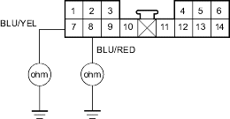
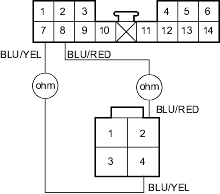
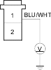

- Disconnect climate control unit connector A (14P).
- Check for continuity between the No. 7 and No. 8 terminals of climate control unit connector A (14P) and body ground individually.
CLIMATE CONTROL UNIT CONNECTOR A (14P)

Wire side of female terminals
Is there continuity?
YES - Repair any short to body ground in the wire(s) between the climate control unit and the power transistor. 
NO - Go to step 14.
- Check for continuity between the following terminals of climate control unit connector A (14P) and power transistor 4P connector.
14P: 4P: No. 7 No. 4 No. 8 No. 2
CLIMATE CONTROL UNIT CONNECTOR A (14P)
Wire side of female terminals

POWER TRANSISTOR 4P CONNECTOR
Wire side of female terminals
Is there continuity?
YES - Go to step 15.
NO - Repair any open in the wire(s) between the climate control unit and the power transistor.
- Reconnect climate control unit connector A (14 P).
- Test the power transistor (see page 21-50).
Is the power transistor OK?
YES - Check for loose wires or poor connections at climate control unit connector A (14P) and at the power transistor 4P connector. If the connections are good, substitute a known-good climate control unit and recheck. If the symptom/indication goes away, replace the original climate control unit.
NO - Replace the power transistor.
- Disconnect the jumper wire.
- Disconnect the blower motor 2P connector.
- Measure the voltage between the No. 1 terminal of the blower motor 2P connector and body ground.
BLOWER MOTOR 2P CONNECTOR

Wire side of female terminals
Is there battery voltage?
YES - Replace the blower motor.
NO - Go to step 20.
- Turn the ignition switch OFF.
- Remove the blower motor relay from the under-hood fuse/relay box and test it (see page 22-80).
Is the relay OK?
YES - Go to step 22.
NO - Replace the blower motor relay.